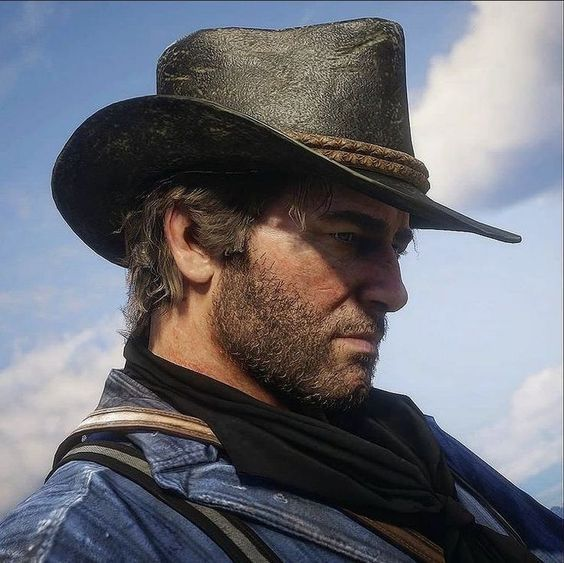
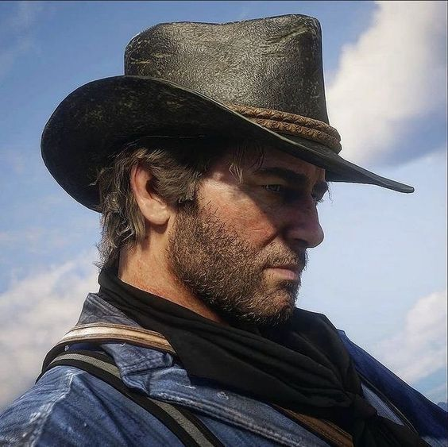

Early Life (1863 - 1877)
Arthur Morgan was born in 1863, during the final years of the American Civil War. His early life was
marked by instability and loss. His mother died when Arthur was still a child, leaving him emotionally
scarred and without guidance.
His father, Lyle Morgan, was a petty criminal and violent man who frequently clashed with the law. Lyle
was eventually arrested for theft and died in prison.
Arthur later reflects that his father was not a good man, but still mourns him, suggesting Arthur learned
early that love and wrongdoing could coexist. With both parents gone, Arthur became an orphan at a young
age, surviving on the fringes of society.
Meeting Dutch (1877)
At 14 years old, Arthur attempted a robbery and was caught. Rather than being turned in, he was found by
Dutch van der Linde and Hosea Matthews, who saw potential in the angry, intelligent boy.
Mentorship
Dutch:
- Taught Arthur to read and write
- Exposed him to philosophy, literature, and ideals of freedom
- Became a surrogate father
Hosea:
- Taught Arthur strategy, patience, and subtlety
- Balanced Dutch's grand ideals with pragmatism
The Outlaw Life
Under Dutch's influence, Arthur was indoctrinated into the gang's philosophy:
- Loyalty above all – The gang was family. Betrayal was unthinkable.
- The world is cruel – Lawmen and the rich were enemies of freedom.
- Taking is justified – Robbing banks and the wealthy was framed as a moral act.
Arthur's Traits
- Intelligence: Quick-thinking, able to strategize and foresee consequences.
- Dry humor: Used humor as a coping mechanism in grim situations.
- Artistic sensitivity: Kept a journal, made sketches, and reflected on morality.
These habits indicate that Arthur never fully embraced the outlaw lifestyle
mentally.
Role in the Gang
- Right-hand man: Dutch's most trusted enforcer.
- Discipline: Enforced rules, though rarely took pleasure in violence.
- Mediator: Calmed tensions between Dutch and the others.
Inner Conflict
Arthur's life was survival-driven, but his inner thoughts reveal moral conflict. His artistic tendencies
suggest a man struggling to reconcile his actions with his conscience.
This internal tension sets the stage for his eventual moral awakening.
The Blackwater Disaster
The ferry robbery marked the beginning of the end. Dutch killed an innocent woman, shocking Arthur. For
the first time, Arthur openly questioned Dutch's judgment.
Arthur observed Dutch:
- Manipulating the gang
- Trusting Micah Bell over allies
- Sacrificing innocent lives
1. Recognizing the Future
As Arthur's tuberculosis worsens, he realizes his time is limited. He sees Dutch is consumed by paranoia
and that John Marston represents a chance for a life free from crime.
2. Helping John Marston
Arthur fights off Micah Bell and lawmen to buy time for John. He provides John with resources to start a
new life, prioritizing someone else's well-being over loyalty to Dutch.
3. Rejecting Dutch's Way
He understands that Dutch's philosophy is destructive. Arthur no longer blindly follows; he breaks free
from the toxic loyalty that defined his life.
4. Accepting Responsibility
Arthur acknowledges his past misdeeds. He does not rationalize his actions but faces the truth of his
sins, demonstrating courage and emotional maturity.
5. Finding Peace
Depending on choices, Arthur can die peacefully watching the sunrise. The sunrise symbolizes hope,
renewal, and the light of conscience. His final choices have meaning.
6. Legacy
Arthur's sacrifice enables John's story. He transforms from a corrupt enforcer into a tragic hero who
finds moral clarity. It's never too late to do the right thing.
Summary
Arthur Morgan's story is a tragedy of loyalty, love, and moral awakening. He was shaped by violence but
chose compassion at the end. Arthur is remembered as a deeply human figure who changed when it mattered
most.


.jpg)
 

.jpg)
.jpg)
 on X.jpg)

.jpg)


.jpg)

.jpg)